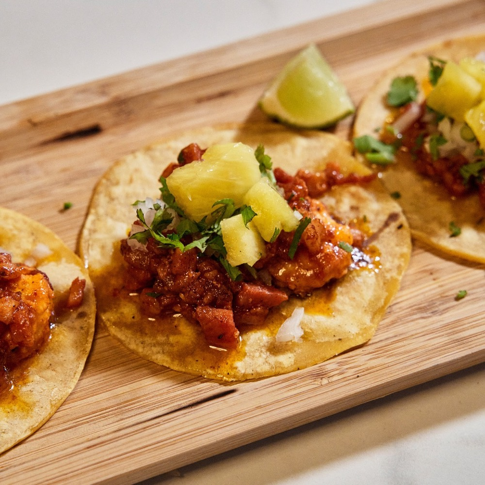
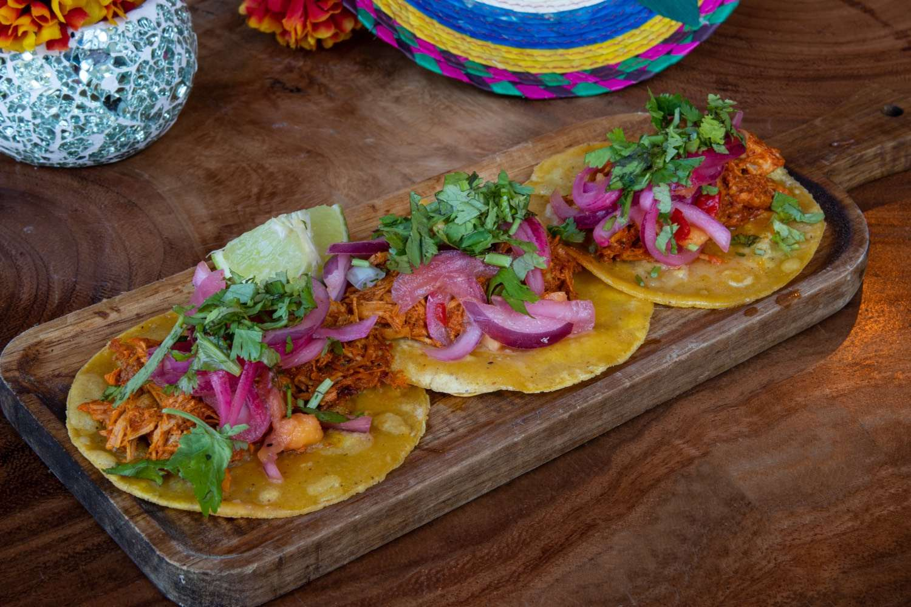
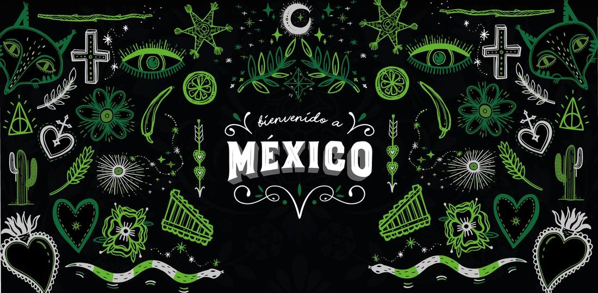

Taquería · La Pobla de Vallbona
Tacos al pastor, cochinita pibil y quesabirria, con tortilla de maíz y mucha sazón. 2.º puesto en la Gastroleague 2025.
Ven a darle rienda suelta a tus emociones a través de los sentidos, recorre México acompañado del nuevo rostro de su gastronomía llena de vida, dándole un giro inesperado a la tradición.
Fácil y rápido

El taco es protagonista
Pastor adobado en achiote, asada a la plancha y cochinita pibil cocida a baja temperatura en hoja de plátano. Pide la orden de 5 y combínalos como quieras.
Guía del agave
El tequila se disfruta. El mezcal se descubre. Cuéntanos qué sabores te gustan y te ayudamos a elegir: blanco, reposado o cristalino; económico, top o premium.
Para llevar y a domicilio

Guisos para llevar
Carnitas, cochinita pibil, suadero, birria, barbacoa, pastor y pollo con mole en paquetes de 500 g al vacío: rinden para unos 20–25 tacos. Con salsas y tortillas para completar la comida.
Catering mexicano y taquizas
Bodas temáticas, cumpleaños, eventos corporativos, ferias y festivales: guisos auténticos, salsas artesanales, food truck y barra de cócteles mexicanos, a partir de 20 personas. Pide tu presupuesto sin compromiso.

Descubrir másHorario: miércoles y jueves 19:30 – 23:00 h
Viernes a domingo 13:30 – 16:00 h y 19:30 – 23:00 h